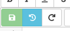

Time Travel
CoCalc calls “Time Travel” the historic recording of all changes in a file. This works for all text-based documents in a Frame Editor and also Jupyter Notebooks, Sage Worksheets, and LaTeX Editor.
Using Time Travel
To open it, click on the light blue button with the reversed cirular arrow around a clock:
Then you can see the underlying history, e.g. here for exactly this time-travel.rst file of the documentation in front of you.
(1) is the control knob of the slider
(2) to view changes between two revisions
(3) to revert the file back to the given revision. This doesn’t undo the history, but adds a new entry at the end. No changes get lost.
For very long histories, another button will show up to load the entire history.

With [x] Changes enabled, you get a two-ended slider to see the changes between these two revisions:
For more information, read this blog post about time travel.
Export History
Clicking the Export button generates a machine-readable representation of all changes, summarizing who made them and when exactly.
This can be used to track the depth of contributions to a specific file,
e.g. students in the context of a group project.
Note that the "user": "Project: ..." is the backend process modifying the file, i.e. that’s not a human person. (See the next section for more information.)
Who Changed My File?
Time Travel shows who made changes to a file. This is helpful when two or more users have edited a file.
In the case that Time Travel says “The Project” made the change, that means that some process other than the CoCalc editor modified the file, and that version was newer than the version used by the editor at the time. This can happen for many reasons. For example, if the file is stored in git, then switching to a different branch could change the contents of the file. Another cause could be running a notebook with JupyterLab or Jupyter classic at the same time as CoCalc Jupyter.
Make sure you save your file to disk when you’re finished working with it. A file is saved to disk when the “Save” button turns from a bright green to a disabled dull green.
Clear TimeTravel History for a File
While you can’t explicitly delete the TimeTravel history for a file, you can achieve a similar result. CoCalc, unlike other software (including Microsoft Office), does not store the TimeTravel history of a file in the file or even in any filesystem (e.g., it is not in a hidden file). It exists only in the CoCalc backend PostgreSQL database as a series of patches tracking the evolution of your notebook over time. It is the same data used for realtime collaboration. TimeTravel is associated to the specific project and path. If you copy your file to a new location (even in the same project), then click “TimeTravel”, you will see that it is a new history.

{kind=link}